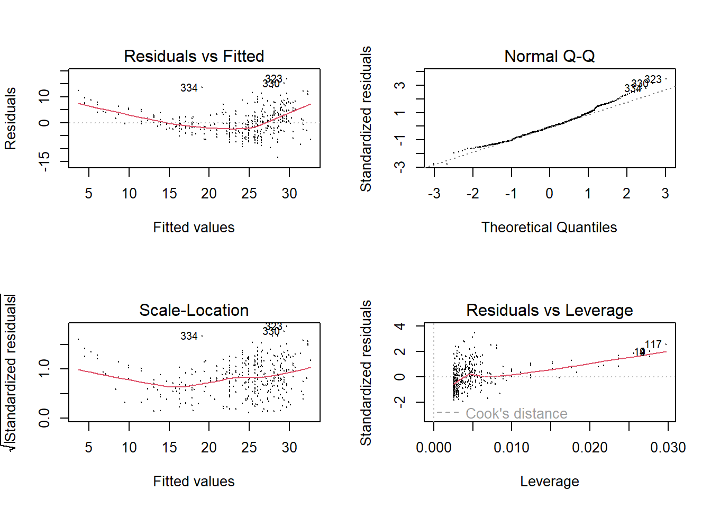
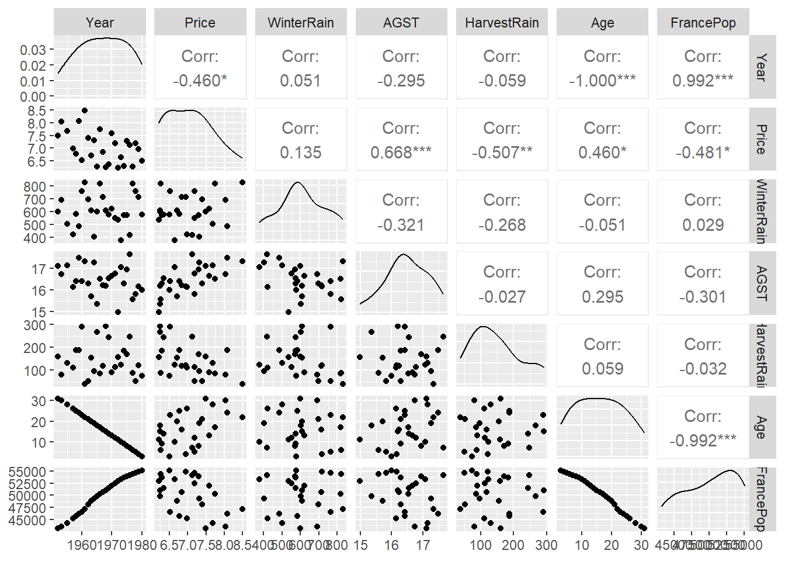

Answers
Practical 1
For the tasks below, you will require the Auto dataset from the core textbook (James et. al 2021).
This dataset is part of the ISRL2 package. By loading the package, the
Auto dataset loads automatically:
library(ISLR2)
Remember to install it first
install.packages("ISLR2")
This data file (text format) contains 398 observations of 9 variables. The variables are:
- mpg: miles per gallon
- cylinders: Number of cylinders between 4 and 8
- displacement: Engine displacement (cu. inches)
- horsepower: Engine horsepower
- weight: Vehicle weight (lbs.)
- acceleration: Time to accelerate from 0 to 60 mph (sec.)
- year: Model year
- origin: Origin of car (1. American, 2. European, 3. Japanese)
- name: Vehicle name
Task 1
Use the lm() function to perform simple linear regression with mpg
as the response and horsepower as the predictor. Store the output in
an object called fit.
Task 2
Have a look at the results of the model.
##
## Call:
## lm(formula = mpg ~ horsepower, data = Auto)
##
## Residuals:
## Min 1Q Median 3Q Max
## -13.5710 -3.2592 -0.3435 2.7630 16.9240
##
## Coefficients:
## Estimate Std. Error t value Pr(>|t|)
## (Intercept) 39.935861 0.717499 55.66 <2e-16 ***
## horsepower -0.157845 0.006446 -24.49 <2e-16 ***
## ---
## Signif. codes: 0 '***' 0.001 '**' 0.01 '*' 0.05 '.' 0.1 ' ' 1
##
## Residual standard error: 4.906 on 390 degrees of freedom
## Multiple R-squared: 0.6059, Adjusted R-squared: 0.6049
## F-statistic: 599.7 on 1 and 390 DF, p-value: < 2.2e-16Is there a relationship between the predictor and the response?
The slope coefficient (-0.157845) is statistically significant
(<2e-16 ***). We can conclude that there is evidence to suggest a
negative relationship between miles per gallon and engine horsepower.
For a one-unit increase in engine horsepower, miles per gallon are
reduced by 0.16.
Task 3
What is the associated 95% confidence intervals for predicted miles per
gallon associated with an engine horsepower of 98? Hint: use the
predict() function. For confidence intervals, set the interval
argument to confidence.
## fit lwr upr
## 1 24.46708 23.97308 24.96108Task 4
How about the prediction interval for the same value?
## fit lwr upr
## 1 24.46708 14.8094 34.12476Are the two intervals different? Why?
The prediction interval (lower limit 14.8094 and upper limit 34.12476) is wider (and therefore less precise) than the confidence interval (lower limit 23.97308 and upper limit 24.96108). The confidence interval measures the uncertainty around the estimate of the conditional mean whilst the prediction interval takes into account not only uncertainty but also the variability of the conditional distribution.
Task 5
Using base R, plot the response and the predictor as well as the least squares regression line. Add suitable labels to the X and Y axes.

Task 6
Use base R to produce diagnostic plots of the least squares regression fit. Display these in a 2X2 grid.

Task 7
Subset the Auto dataset such that it excludes the name and origin variables and store this subsetted dataset in a new object called quant_vars.
Task 8
Compute a correlation matrix of all variables.
## mpg cylinders displacement horsepower weight
## mpg 1.0000000 -0.7776175 -0.8051269 -0.7784268 -0.8322442
## cylinders -0.7776175 1.0000000 0.9508233 0.8429834 0.8975273
## displacement -0.8051269 0.9508233 1.0000000 0.8972570 0.9329944
## horsepower -0.7784268 0.8429834 0.8972570 1.0000000 0.8645377
## weight -0.8322442 0.8975273 0.9329944 0.8645377 1.0000000
## acceleration 0.4233285 -0.5046834 -0.5438005 -0.6891955 -0.4168392
## year 0.5805410 -0.3456474 -0.3698552 -0.4163615 -0.3091199
## acceleration year
## mpg 0.4233285 0.5805410
## cylinders -0.5046834 -0.3456474
## displacement -0.5438005 -0.3698552
## horsepower -0.6891955 -0.4163615
## weight -0.4168392 -0.3091199
## acceleration 1.0000000 0.2903161
## year 0.2903161 1.0000000Did you use the Auto dataset or the quant_vars object? Why does it matter which data object you use?
To compute the correlation matrix using all variables of a data object, these variables must all be numeric. In the Auto data object, the name variable is coded as a factor.
class(Auto$name)
[1] "factor"
Therefore, if you try to use the cor() function with Auto dataset
without excluding the name variable, you will get an error.
cor(Auto)
Error in cor(Auto) : 'x' must be numeric.
Also, whilst the origin variable is of class integer and will not
pose a problem when you apply the cor() function, you’ll remember from
the variable description list that this is a nominal variable with its
categories numerically labelled.
Compute the correlation matrix using quant_vars.
Task 9
Using the quant_vars object, perform multiple linear regression with miles per gallon as the response and all other variables as the predictors.
Store the results in an object called fit2.
Task 10
Have a look at the results of the multiple regression model.
##
## Call:
## lm(formula = mpg ~ ., data = quant_vars)
##
## Residuals:
## Min 1Q Median 3Q Max
## -8.6927 -2.3864 -0.0801 2.0291 14.3607
##
## Coefficients:
## Estimate Std. Error t value Pr(>|t|)
## (Intercept) -1.454e+01 4.764e+00 -3.051 0.00244 **
## cylinders -3.299e-01 3.321e-01 -0.993 0.32122
## displacement 7.678e-03 7.358e-03 1.044 0.29733
## horsepower -3.914e-04 1.384e-02 -0.028 0.97745
## weight -6.795e-03 6.700e-04 -10.141 < 2e-16 ***
## acceleration 8.527e-02 1.020e-01 0.836 0.40383
## year 7.534e-01 5.262e-02 14.318 < 2e-16 ***
## ---
## Signif. codes: 0 '***' 0.001 '**' 0.01 '*' 0.05 '.' 0.1 ' ' 1
##
## Residual standard error: 3.435 on 385 degrees of freedom
## Multiple R-squared: 0.8093, Adjusted R-squared: 0.8063
## F-statistic: 272.2 on 6 and 385 DF, p-value: < 2.2e-16Is there a relationship between the predictors and the response? Which predictors appear to have a statistically significant relationship to the response? What does the coefficient for the year variable suggest?
Two of the predictors are statistically significant: weight and year. The relationship between weight and mpg is negative which suggests that for a one pound increase in weight of vehicle, the number of miles per gallon the vehicle can travel decreases, whilst that of mpg and year is positive which suggests that the more recent the vehicle is, the higher the number of miles per gallon it can travel.
Task 11
Produce diagnostic plots of the multiple linear regression fit in a 2x2 grid.

Do the residual plots suggest any unusually large outliers? Does the leverage plot identify any observations with unusually high leverage?
One point has high leverage, the residuals also show a trend with fitted values.
Task 12
Fit separate linear regression models with interaction effect terms for: weight and horsepower, acceleration and horsepower, and cylinders and weight.
summary(lm(mpg ~ . + weight:horsepower, data = quant_vars))
summary(lm(mpg ~ . + acceleration:horsepower, data = quant_vars))
summary(lm(mpg ~ . + cylinders:weight, data = quant_vars))Are any of the interaction terms statistically significant?
For each model, the interaction term is statistically significant.
Task 13
Using the Auto data object, apply transformations for the horsepower variable and plot the relationship between horsepower and mpg in a 2x2 grid.
- First plot: use the original variable;
- Second plot: apply log transform;
- Third plot: raise it to the power of two.
par(mfrow = c(2, 2))
plot(Auto$horsepower, Auto$mpg, cex = 0.2)
plot(log(Auto$horsepower), Auto$mpg, cex = 0.2)
plot(Auto$horsepower ^ 2, Auto$mpg, cex = 0.2)Which of these transformations is most suitable?
The relationship between horsepower and miles per gallon is clearly non-linear (plot 1). The log transform seems to address this best.
Task 14
Now run a multiple regression model with all variables as before but this time, apply a log transformation of the horsepower variable.
Task 15
Have a look at the results.
##
## Call:
## lm(formula = mpg ~ ., data = quant_vars)
##
## Residuals:
## Min 1Q Median 3Q Max
## -8.6778 -2.0080 -0.3142 1.9262 14.0979
##
## Coefficients:
## Estimate Std. Error t value Pr(>|t|)
## (Intercept) 29.1713000 8.9291383 3.267 0.00118 **
## cylinders -0.3563199 0.3181815 -1.120 0.26347
## displacement 0.0088277 0.0068866 1.282 0.20066
## horsepower -8.7568129 1.5958761 -5.487 7.42e-08 ***
## weight -0.0044304 0.0007213 -6.142 2.03e-09 ***
## acceleration -0.3317439 0.1077476 -3.079 0.00223 **
## year 0.6979715 0.0503916 13.851 < 2e-16 ***
## ---
## Signif. codes: 0 '***' 0.001 '**' 0.01 '*' 0.05 '.' 0.1 ' ' 1
##
## Residual standard error: 3.308 on 385 degrees of freedom
## Multiple R-squared: 0.8231, Adjusted R-squared: 0.8203
## F-statistic: 298.5 on 6 and 385 DF, p-value: < 2.2e-16How do the results of model fit3 differ from those of model fit2?
The fit2 model results showed that only two predictors were statistically significant: weight and year. The fit3 model has two additional predictors that are statistically significant: acceleration as well as horsepower.Also, the coefficient values can now be interpreted more easily.

Practical 2
For the tasks below, you will require the Carseats dataset from the core textbook (James et. al 2021).
This dataset is part of the ISRL2 package. By loading the package, the
Carseats dataset loads automatically:
library(ISLR2)
This dataframe object contains a simulated dataset of sales of child car seats at 400 different stores.
The 9 variables are:
- Sales: Unit sales (thousands of dollars) at each location
- CompPrice: Price charged by competitor at each location
- Income: Community income level (thousands of dollars)
- Advertising: Local advertising budget for company at each location
(thousands of dollars)
- Population: Population size in region (thousands of dollars)
- Price: Price company charges for car seats at each site
- ShelveLoc: Quality of the shelving location for the car seats at
each site
- Age: Average age of the local population
- Education: Education level at each location
- Urban: Whether the store is in an urban or rural location
- US: Whether the store is in the US or not
Task 1
Fit a multiple regression model to predict unit sales at each location based on price company charges for car seats, whether the store is in an urban or rural location, and whether the store is in the US or not.
Task 2
Have a look at the results and interpret the coefficients.
##
## Call:
## lm(formula = Sales ~ Price + Urban + US, data = Carseats)
##
## Residuals:
## Min 1Q Median 3Q Max
## -6.9206 -1.6220 -0.0564 1.5786 7.0581
##
## Coefficients:
## Estimate Std. Error t value Pr(>|t|)
## (Intercept) 13.043469 0.651012 20.036 < 2e-16 ***
## Price -0.054459 0.005242 -10.389 < 2e-16 ***
## UrbanYes -0.021916 0.271650 -0.081 0.936
## USYes 1.200573 0.259042 4.635 4.86e-06 ***
## ---
## Signif. codes: 0 '***' 0.001 '**' 0.01 '*' 0.05 '.' 0.1 ' ' 1
##
## Residual standard error: 2.472 on 396 degrees of freedom
## Multiple R-squared: 0.2393, Adjusted R-squared: 0.2335
## F-statistic: 41.52 on 3 and 396 DF, p-value: < 2.2e-16Which coefficients are statistically significant? What do they indicate?
The null hypothesis for the slope being zero is rejected for the Price and US variables. The coefficient for Price is statistically significant; since it is negative, as price increases by a thousand dollars (i.e. one unit increase), the sales of child decrease by about 0.05. The slope for the US variable is also statistically significant but it is positive. Also, this is a binary factor variable coded as Yes and No (No is the reference category). Therefore, sales of child car seats are higher by 1.2 for car seat products that are produced in the US than for car seat products not produced in the US.
Task 3
Based on the conclusions you have drawn in Task 2, now fit a smaller model that only uses the predictors for which there is evidence of association with sales.
Task 4
Compare the two models (fit and fit2).
## Analysis of Variance Table
##
## Model 1: Sales ~ Price + Urban + US
## Model 2: Sales ~ Price + US
## Res.Df RSS Df Sum of Sq F Pr(>F)
## 1 396 2420.8
## 2 397 2420.9 -1 -0.03979 0.0065 0.9357Which model is the better fit?
They have similar r-squared values, and the fit model (containing the extra variable Urban) is non-significantly better.

Practical 3: The Quality of Red Bordeaux Vintages
This demonstration was developed by Dr. Tatjana Kecojevic, Lecturer in Social Statistics.
We would like to analyse the quality of a vintage that has been quantified as the price and make the interpretation of our statistical findings.
We are going to use wine.csv available from Eduardo García Portugués’s book: Notes for Predictive Modelling; https://bookdown.org/egarpor/PM-UC3M/.
The wine dataset is formed by the auction price of 27 red Bordeaux vintages, five vintage descriptors (WinterRain, AGST, HarvestRain, Age, Year), and the population of France in the year of the vintage, FrancePop.
- Year: year in which grapes were harvested to make wine
- Price: logarithm of the average market price for Bordeaux vintages according to 1990–1991 auctions. The price is relative to the price of the 1961 vintage, regarded as the best one ever recorded
- WinterRain: winter rainfall (in mm)
- AGST: Average Growing Season Temperature (in degrees Celsius)
- HarvestRain: harvest rainfall (in mm)
- Age: age of the wine measured as the number of years stored in a cask
- FrancePop: population of France at Year (in thousands)
You will require the GGally package; please make sure to install it first.
And now let’s import the data.
Let’s first obtain some summary statistics.
## Year Price WinterRain AGST HarvestRain
## Min. :1952 Min. :6.205 Min. :376.0 Min. :14.98 Min. : 38.0
## 1st Qu.:1960 1st Qu.:6.508 1st Qu.:543.5 1st Qu.:16.15 1st Qu.: 88.0
## Median :1967 Median :6.984 Median :600.0 Median :16.42 Median :123.0
## Mean :1967 Mean :7.042 Mean :608.4 Mean :16.48 Mean :144.8
## 3rd Qu.:1974 3rd Qu.:7.441 3rd Qu.:705.5 3rd Qu.:17.01 3rd Qu.:185.5
## Max. :1980 Max. :8.494 Max. :830.0 Max. :17.65 Max. :292.0
## Age FrancePop
## Min. : 3.00 Min. :43184
## 1st Qu.: 9.50 1st Qu.:46856
## Median :16.00 Median :50650
## Mean :16.19 Mean :50085
## 3rd Qu.:22.50 3rd Qu.:53511
## Max. :31.00 Max. :55110And a matrix of plots.

What conclusions can you draw based on the above information?
We can notice a perfect relationship between the variables Year and Age. This is to be expected since this data was collected in 1983 and Age was calculated as: Age = 1983 - Year. Knowing this, we are going to remove Year from the analysis and use Age as it will be easier to interpret.
There is a strong relationship between Year, ie. Age and FrancePop and since we want to impose our viewpoint that the total population does not influence the quality of the wine we will not consider this variable in the model.
We are going to investigate possible interactions between the rainfall (WinterRain) and the growing season temperature (AGST). We will start with the most complicated model that includes the highest-order interaction. In R we will specify the three-way interaction, which will automatically add all combinations of two-way interactions.
model1 <- lm(Price ~ WinterRain + AGST + HarvestRain + Age + WinterRain * AGST * HarvestRain, data = wine)
summary(model1)##
## Call:
## lm(formula = Price ~ WinterRain + AGST + HarvestRain + Age +
## WinterRain * AGST * HarvestRain, data = wine)
##
## Residuals:
## Min 1Q Median 3Q Max
## -0.35058 -0.19462 -0.02645 0.17194 0.52079
##
## Coefficients:
## Estimate Std. Error t value Pr(>|t|)
## (Intercept) 8.582e+00 1.924e+01 0.446 0.6609
## WinterRain -1.858e-02 2.896e-02 -0.642 0.5292
## AGST -1.748e-01 1.137e+00 -0.154 0.8795
## HarvestRain -4.713e-02 1.540e-01 -0.306 0.7631
## Age 2.476e-02 8.288e-03 2.987 0.0079 **
## WinterRain:AGST 1.272e-03 1.712e-03 0.743 0.4671
## WinterRain:HarvestRain 7.836e-05 2.600e-04 0.301 0.7665
## AGST:HarvestRain 3.059e-03 9.079e-03 0.337 0.7401
## WinterRain:AGST:HarvestRain -5.446e-06 1.540e-05 -0.354 0.7278
## ---
## Signif. codes: 0 '***' 0.001 '**' 0.01 '*' 0.05 '.' 0.1 ' ' 1
##
## Residual standard error: 0.2833 on 18 degrees of freedom
## Multiple R-squared: 0.8621, Adjusted R-squared: 0.8007
## F-statistic: 14.06 on 8 and 18 DF, p-value: 2.675e-06What can you say about the explained variability of the model? Which coefficients are statistically significant? Simplify the model in stages and decide on the final model.
The model explains well over 80% of variability and is clearly a strong model, but the key question is whether we can simplify it.
We will start the process of this model simplification by removing the three-way interaction as it is clearly not significant.
##
## Call:
## lm(formula = Price ~ WinterRain + AGST + HarvestRain + Age +
## WinterRain:AGST + WinterRain:HarvestRain + AGST:HarvestRain,
## data = wine)
##
## Residuals:
## Min 1Q Median 3Q Max
## -0.35245 -0.19452 0.01643 0.17289 0.51420
##
## Coefficients:
## Estimate Std. Error t value Pr(>|t|)
## (Intercept) 2.980e+00 1.066e+01 0.279 0.78293
## WinterRain -9.699e-03 1.408e-02 -0.689 0.49930
## AGST 1.542e-01 6.383e-01 0.242 0.81168
## HarvestRain 6.496e-03 2.610e-02 0.249 0.80610
## Age 2.441e-02 8.037e-03 3.037 0.00678 **
## WinterRain:AGST 7.490e-04 8.420e-04 0.890 0.38484
## WinterRain:HarvestRain -1.350e-05 7.338e-06 -1.840 0.08144 .
## AGST:HarvestRain -1.032e-04 1.520e-03 -0.068 0.94656
## ---
## Signif. codes: 0 '***' 0.001 '**' 0.01 '*' 0.05 '.' 0.1 ' ' 1
##
## Residual standard error: 0.2767 on 19 degrees of freedom
## Multiple R-squared: 0.8611, Adjusted R-squared: 0.8099
## F-statistic: 16.83 on 7 and 19 DF, p-value: 6.523e-07The \(\overline{R}^2\) has slightly increased in value. Next, we remove the least significant two-way interaction term.
##
## Call:
## lm(formula = Price ~ WinterRain + AGST + HarvestRain + Age +
## WinterRain:AGST + WinterRain:HarvestRain, data = wine)
##
## Residuals:
## Min 1Q Median 3Q Max
## -0.35424 -0.19343 0.01176 0.17161 0.51218
##
## Coefficients:
## Estimate Std. Error t value Pr(>|t|)
## (Intercept) 3.518e+00 6.946e+00 0.507 0.61802
## WinterRain -1.017e-02 1.195e-02 -0.851 0.40488
## AGST 1.218e-01 4.138e-01 0.294 0.77147
## HarvestRain 4.752e-03 4.553e-03 1.044 0.30901
## Age 2.451e-02 7.710e-03 3.179 0.00472 **
## WinterRain:AGST 7.769e-04 7.166e-04 1.084 0.29119
## WinterRain:HarvestRain -1.342e-05 7.059e-06 -1.902 0.07174 .
## ---
## Signif. codes: 0 '***' 0.001 '**' 0.01 '*' 0.05 '.' 0.1 ' ' 1
##
## Residual standard error: 0.2697 on 20 degrees of freedom
## Multiple R-squared: 0.8611, Adjusted R-squared: 0.8194
## F-statistic: 20.66 on 6 and 20 DF, p-value: 1.35e-07Again, it is reassuring to notice an increase in the \(\overline{R}^2\), but we can still simplify the model further by removing another least significant two-way interaction term.
##
## Call:
## lm(formula = Price ~ WinterRain + AGST + HarvestRain + Age +
## WinterRain:HarvestRain, data = wine)
##
## Residuals:
## Min 1Q Median 3Q Max
## -0.5032 -0.1934 0.0109 0.1771 0.4621
##
## Coefficients:
## Estimate Std. Error t value Pr(>|t|)
## (Intercept) -3.812e+00 1.598e+00 -2.386 0.026553 *
## WinterRain 2.747e-03 9.471e-04 2.900 0.008560 **
## AGST 5.586e-01 9.495e-02 5.883 7.71e-06 ***
## HarvestRain 4.717e-03 4.572e-03 1.032 0.313877
## Age 2.785e-02 7.094e-03 3.926 0.000774 ***
## WinterRain:HarvestRain -1.349e-05 7.088e-06 -1.903 0.070835 .
## ---
## Signif. codes: 0 '***' 0.001 '**' 0.01 '*' 0.05 '.' 0.1 ' ' 1
##
## Residual standard error: 0.2708 on 21 degrees of freedom
## Multiple R-squared: 0.8529, Adjusted R-squared: 0.8179
## F-statistic: 24.35 on 5 and 21 DF, p-value: 4.438e-08There is an insignificant decrease in \(\overline{R}^2\). We notice HarvestRain is now the least significant term, but it is used for the WinterRain:HarvestRain interaction, which is significant at \(\alpha = 0.05\) and therefore we should keep it. However, as the concept of parsimony prefers a model without interactions to a model containing interactions between variables, we will remove the remaining interaction term and see if it significantly affects the explanatory power of the model.
##
## Call:
## lm(formula = Price ~ WinterRain + AGST + HarvestRain + Age, data = wine)
##
## Residuals:
## Min 1Q Median 3Q Max
## -0.46024 -0.23862 0.01347 0.18601 0.53443
##
## Coefficients:
## Estimate Std. Error t value Pr(>|t|)
## (Intercept) -3.6515703 1.6880876 -2.163 0.04167 *
## WinterRain 0.0011667 0.0004820 2.420 0.02421 *
## AGST 0.6163916 0.0951747 6.476 1.63e-06 ***
## HarvestRain -0.0038606 0.0008075 -4.781 8.97e-05 ***
## Age 0.0238480 0.0071667 3.328 0.00305 **
## ---
## Signif. codes: 0 '***' 0.001 '**' 0.01 '*' 0.05 '.' 0.1 ' ' 1
##
## Residual standard error: 0.2865 on 22 degrees of freedom
## Multiple R-squared: 0.8275, Adjusted R-squared: 0.7962
## F-statistic: 26.39 on 4 and 22 DF, p-value: 4.057e-08The \(\overline{R}^2\) is reduced by around 2%, but it has all the significant terms and it is easier to interpret. For those reasons and in the spirit of parsimony that argues that a model should be as simple as possible, we can suggest that this should be regarded as the best final fitted model.
We realise that for the large numbers of explanatory variables, and many interactions and non-linear terms, the process of model simplification can take a very long time. There are many algorithms for automatic variable selection that can help us to choose the variables to include in a regression model. Stepwise regression and Best Subsets regression are two of the more common variable selection methods.
The stepwise procedure starts from the saturated model (or the maximal model, whichever is appropriate) through a series of simplifications to the minimal adequate model. This progression is made on the basis of deletion tests: F tests, AIC, t-tests or chi-squared tests that assess the significance of the increase in deviance that results when a given term is removed from the current model.
The best subset regression (BREG), also known as “all possible regressions”, as the name of the procedure indicates, fits a separate least squares regression for each possible combination of the p predictors, i.e. explanatory variables. After fitting all of the models, BREG then displays the best fitted models with one explanatory variable, two explanatory variables, three explanatory variables, and so on. Usually, either adjusted R-squared or Mallows Cp is the criterion for picking the best fitting models for this process. The result is a display of the best fitted models of different sizes up to the full/maximal model and the final fitted model can be selected by comparing displayed models based on the criteria of parsimony. You will learn more about variable selection later in the course.
“These methods are frequently abused by naive researchers who seek to interpret the order of entry of variables into the regression equation as an index of their ‘importance’. This practice is potentially misleading.” J. Fox and S. Weisberg’s book: An R Companion to Applied Regression, Third Edition, Sage (2019)
’Parsimony says that, other things being equal, we prefer:
- a model with n−1 parameters to a model with n parameters
- a model with k−1 explanatory variables to a model with k explanatory variables a linear model to a model which is curved
- a model without a hump to a model with a hump
- a model without interactions to a model containing interactions between factors’
Crawley, M.J. 2013, The R Book. 2nd Edition. John Wiley, New York